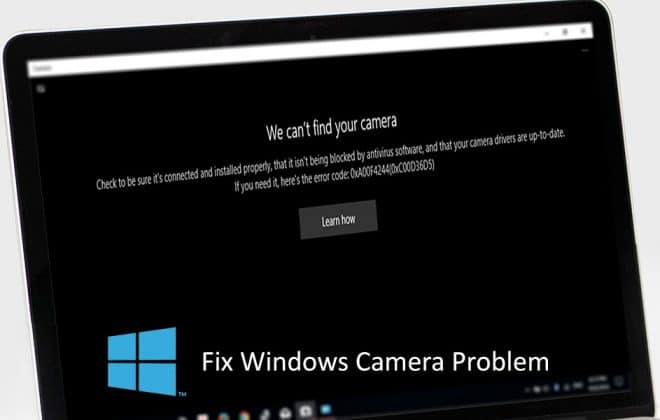

    <!-------------------------------------------blog--------------------------------------------------->
<section class="blog-details">
    <div class="container">
        <div class="blog-details-area">
            <div class="blog-details-img">
                
            </div>  
            <div class="blog_entry_content">
                <p>The "We can't find your camera" error on Windows appears when the system cannot find your camera. The cause can be a hardware problem, a faulty driver, an incorrect access configuration, or a conflict with security software. Follow the simple steps below to know how to fix the error through updating the driver!</p>
                <p><h4>Step 1:</h4>First, you need to find and select Device Manager in the search section on Windows laptops.</p>
                <p><h4>Step 2:</h4> In the Device Manager panel, you will not find the Camera driver. This is the cause of the display error mentioned above. You proceed to click on the Scan for hardware changes item to scan and change hardware.</p>
                <p><h4>Step 3:</h4>After successful scanning, you should check if your computer has received the Camera driver or not. If it is already displayed like the image below, you can use your Camera already!</p>
                <p>The last article showed you how to fix the We can't find your camera error on Windows laptops simply and quickly. If you find it interesting, you can share this article with your family and friends. Wishing you success!</p>
            </div>    
        </div>
    </div>
</section>
    <!----------------------------------------end-blog------------------------------------------>
